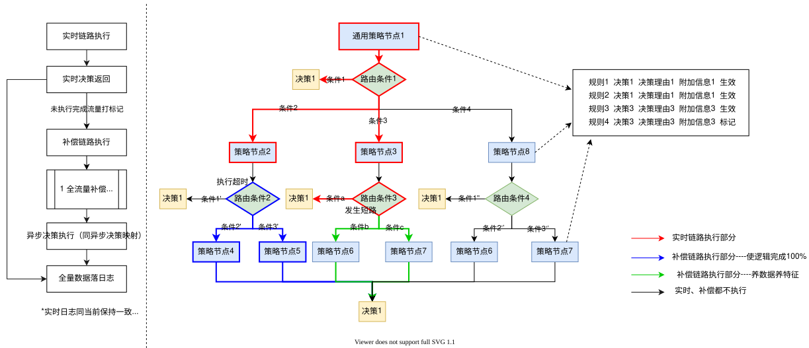
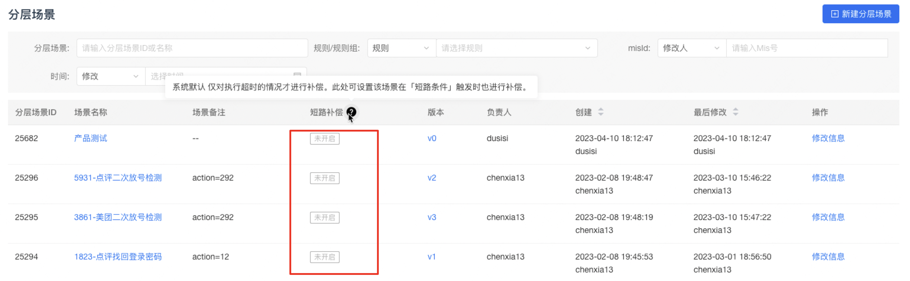
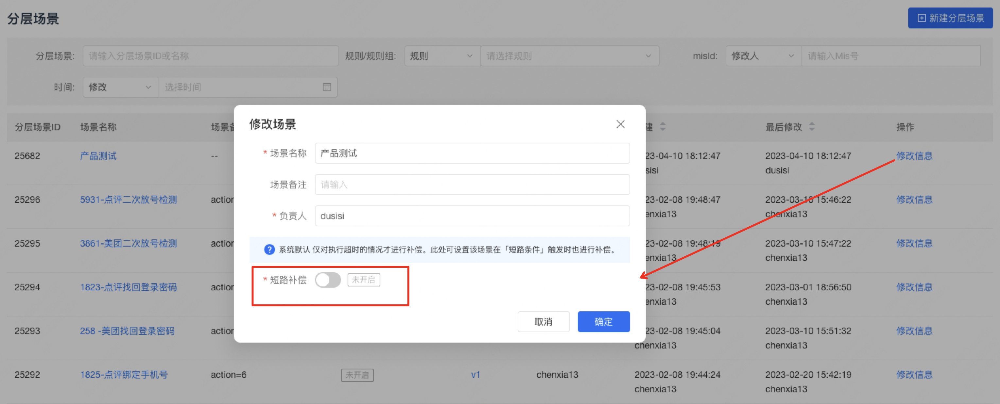
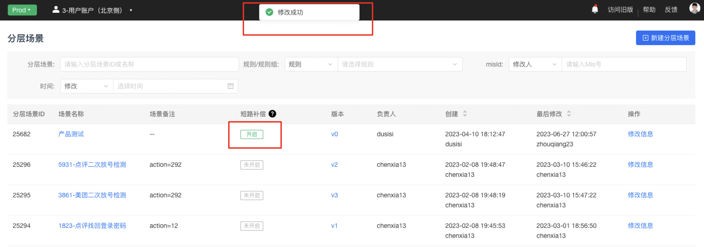

分层场景：补偿执行
一、背景
策略分层执行的方式是将更重要能快速判断出结果的策略优先执行（类似黑白名单/基础参数判断等），复杂且高耗时的规则后执行或不执行，因此在实时链路中就会存在一些未执行的策略，异步补偿就是将这部分本应执行完成，但因为分层未执行的部分在异步链路重新执行。
二、目的
- 风险补偿：在实时链路本应该执行完成，但因 超时 而未执行的部分，使全流量逻辑执行完成100%
-
养数据&特征：在全流量逻辑执行完成100%后，相较于策略并行执行但策略分层根本就没有执行到的策略，重新执行，用于模型、名单等做基础特征数据的数据源。
三、逻辑介绍

3.1 流程说明
以不同颜色的线来介绍分层场景中的几类情况。（一句话：目前只有蓝色链路会补偿）
- 红色：在实时链路中正常执行的部分；
- 黑色：路由条件不满足的分支，在实时和异步补偿链路中都不会执行。
- 绿色：满足短路条件而发生短路的分支，默认在实时链路中不会执行。（用户可自定义该场景 需要对短路情况也进行补偿执行，见3.3）
- 蓝色：执行超时，未执行到本应执行的部分。将在补偿链路（worker）中执行，补偿自动触发。
补偿链路中，规则状态为标记/生效，都将在worker中执行；状态为离线的不执行。
3.2 补偿的决策执行
补偿链路中，普通决策（拦截、通过、验证等）直接落库，无法返回给调用方；
而异步决策（如写名单、写kv）还是会输出给Tatooine异步执行。
普通决策、异步决策概念见：说明：决策
通过补偿决策的设置，可以让补偿链路中命中的「普通决策」转化为「异步决策」再下发执行。配置方式见：分层场景：决策加工组件
补偿数据落库机制：补偿日志与实时日志入库链路和存储 与当前保持一致。
3.3 开启短路补偿
|
描述 |
图 |
|---|---|
|
系统默认 仅对执行超时的情况才进行补偿。可设置该场景在「短路条件」触发时也进行补偿。 |
 |
|
点击修改信息，可以开启短路补偿的开关。 |
 |
|
列表页该列信息展示为【开启】代表该场景除了对超时会触发补偿执行外，执行路由条件组件命中短路条件后，也会触发补偿。 |
 |
四、FAQ
|
问题 |
答 |
|
|---|---|---|
❤️ 欢迎使用并在文档评论区提供宝贵意见与建议！